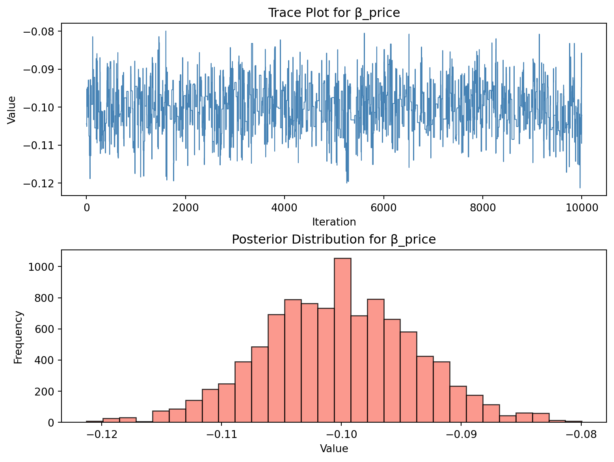
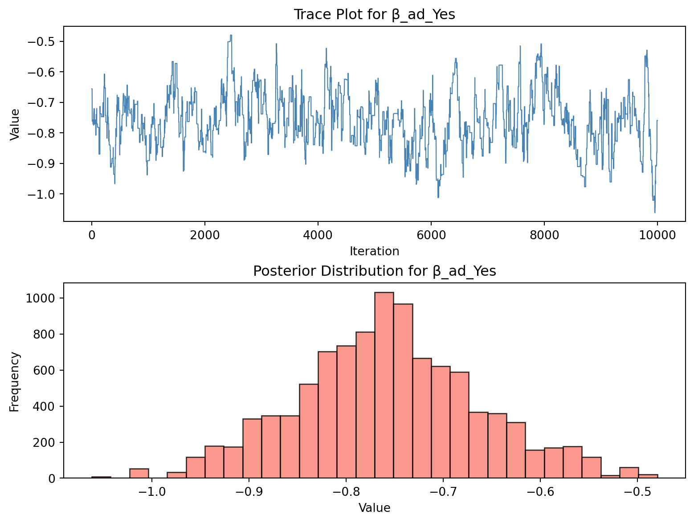

This assignment expores two methods for estimating the MNL model: (1) via Maximum Likelihood, and (2) via a Bayesian approach using a Metropolis-Hastings MCMC algorithm.
1. Likelihood for the Multi-nomial Logit (MNL) Model
Suppose we have \(i=1,\ldots,n\) consumers who each select exactly one product \(j\) from a set of \(J\) products. The outcome variable is the identity of the product chosen \(y_i \in \{1, \ldots, J\}\) or equivalently a vector of \(J-1\) zeros and \(1\) one, where the \(1\) indicates the selected product. For example, if the third product was chosen out of 3 products, then either \(y=3\) or \(y=(0,0,1)\) depending on how we want to represent it. Suppose also that we have a vector of data on each product \(x_j\) (eg, brand, price, etc.).
We model the consumer’s decision as the selection of the product that provides the most utility, and we’ll specify the utility function as a linear function of the product characteristics:
\[ U_{ij} = x_j'\beta + \epsilon_{ij} \]
where \(\epsilon_{ij}\) is an i.i.d. extreme value error term.
The choice of the i.i.d. extreme value error term leads to a closed-form expression for the probability that consumer \(i\) chooses product \(j\):
A clever way to write the individual likelihood function for consumer \(i\) is the product of the \(J\) probabilities, each raised to the power of an indicator variable (\(\delta_{ij}\)) that indicates the chosen product:
We will simulate data from a conjoint experiment about video content streaming services. We elect to simulate 100 respondents, each completing 10 choice tasks, where they choose from three alternatives per task. For simplicity, there is not a “no choice” option; each simulated respondent must select one of the 3 alternatives.
Each alternative is a hypothetical streaming offer consistent of three attributes: (1) brand is either Netflix, Amazon Prime, or Hulu; (2) ads can either be part of the experience, or it can be ad-free, and (3) price per month ranges from $4 to $32 in increments of $4.
The part-worths (ie, preference weights or beta parameters) for the attribute levels will be 1.0 for Netflix, 0.5 for Amazon Prime (with 0 for Hulu as the reference brand); -0.8 for included adverstisements (0 for ad-free); and -0.1*price so that utility to consumer \(i\) for hypothethical streaming service \(j\) is
where the variables are binary indicators and \(\varepsilon\) is Type 1 Extreme Value (ie, Gumble) distributed.
The following code provides the simulation of the conjoint data.
Show code
import numpy as npimport pandas as pdimport itertoolsnp.random.seed(123)# Define attributesbrand = ['N', 'P', 'H'] # Netflix, Prime, Huluad = ['Yes', 'No']price = np.arange(8, 36, 4)# Generate all possible profilesprofiles = pd.DataFrame(list(itertools.product(brand, ad, price)), columns=['brand', 'ad', 'price'])m =len(profiles)# Assign part-worth utilitiesb_util = {'N': 1.0, 'P': 0.5, 'H': 0.0}a_util = {'Yes': -0.8, 'No': 0.0}p_util =lambda p: -0.1* p# Parametersn_peeps =100n_tasks =10n_alts =3# Function to simulate one respondent's datadef sim_one(id): dat_list = []for t inrange(1, n_tasks +1): sample_profiles = profiles.sample(n=n_alts).copy() sample_profiles['resp'] =id sample_profiles['task'] = t# Deterministic utility v = ( sample_profiles['brand'].map(b_util)+ sample_profiles['ad'].map(a_util)+ p_util(sample_profiles['price']) )# Add Gumbel noise (Type I extreme value) e =-np.log(-np.log(np.random.rand(n_alts))) u = v + e# Identify chosen alternative choice = (u == u.max()).astype(int) sample_profiles['choice'] = choice dat_list.append(sample_profiles)return pd.concat(dat_list)# Simulate all respondentsdf_list = [sim_one(i +1) for i inrange(n_peeps)]conjoint_data = pd.concat(df_list).reset_index(drop=True)# Keep only observable variablesconjoint_data = conjoint_data[['resp', 'task', 'brand', 'ad', 'price', 'choice']]
3. Preparing the Data for Estimation
The “hard part” of the MNL likelihood function is organizing the data, as we need to keep track of 3 dimensions (consumer \(i\), covariate \(k\), and product \(j\)) instead of the typical 2 dimensions for cross-sectional regression models (consumer \(i\) and covariate \(k\)). The fact that each task for each respondent has the same number of alternatives (3) helps. In addition, we need to convert the categorical variables for brand and ads into binary variables.
Show code
import pandas as pd# Load data if needed (skip this if already in memory)df = pd.read_csv("conjoint_data.csv")# Drop one dummy per variable to avoid multicollinearitydf_encoded = pd.get_dummies(df, columns=['brand', 'ad'], drop_first=True)# Prepare final design matrixfeature_cols = ['price', 'brand_P', 'brand_N', 'ad_Yes']X_data = df_encoded.copy()X_data[feature_cols] = X_data[feature_cols].astype(float)X = X_data[feature_cols].values# Target variable: 1 if alternative was chosen, 0 otherwisey = X_data['choice'].values# Create group ID per respondent-task (i.e., choice set)group_labels = X_data['resp'].astype(str) +"_"+ X_data['task'].astype(str)group_ids = pd.factorize(group_labels)[0]
4. Estimation via Maximum Likelihood
To estimate the parameters of the Multinomial Logit (MNL) model via maximum likelihood, we first need to specify the log-likelihood function. The MNL model assumes that the probability of a respondent choosing a particular alternative is a function of the observed attributes of that alternative and the model coefficients. The log-likelihood sums the log of these probabilities across all observed choices.
Below, we define a Python function that computes the negative log-likelihood, which will later be minimized using numerical optimization techniques.
Show code
from scipy.special import logsumexpimport numpy as npdef neg_log_likelihood(beta, X, y, group_ids):""" Computes the negative log-likelihood for a Multinomial Logit model. Parameters: beta: array-like, coefficients for each covariate X: design matrix of covariates y: binary array where 1 indicates the chosen alternative group_ids: array marking which rows belong to the same choice set Returns: Negative log-likelihood (float) """ utility = X @ beta log_prob = np.empty_like(utility)for g in np.unique(group_ids): idx = group_ids == g denom = logsumexp(utility[idx]) log_prob[idx] = utility[idx] - denomreturn-np.sum(log_prob[y ==1])
This function computes the probability of the chosen alternative within each choice task and returns the (negative) sum of their log-probabilities.
With the log-likelihood function defined, we now use the scipy.optimize.minimize() function to find the Maximum Likelihood Estimates (MLEs) of the model parameters. The optimization routine minimizes the negative log-likelihood, and the inverse of the Hessian matrix gives us the variance-covariance matrix for the parameter estimates. From this, we compute standard errors and construct 95% confidence intervals for each coefficient.
Show code
from scipy.optimize import minimizeimport pandas as pd# Initial guess for betainit_beta = np.zeros(X.shape[1])# Perform MLE via BFGS optimizationresult = minimize(neg_log_likelihood, init_beta, args=(X, y, group_ids), method='BFGS')# Extract coefficient estimatesbeta_hat = result.x# Compute standard errors from the inverse Hessianhessian_inv = result.hess_invse = np.sqrt(np.diag(hessian_inv))# 95% confidence intervalsci_lower = beta_hat -1.96* seci_upper = beta_hat +1.96* se# Create results DataFramefeature_cols = ['price', 'brand_P', 'brand_N', 'ad_Yes']results_df = pd.DataFrame({'Parameter': feature_cols,'Estimate': beta_hat,'StdError': se,'95% CI Lower': ci_lower,'95% CI Upper': ci_upper})results_df
Parameter
Estimate
StdError
95% CI Lower
95% CI Upper
0
price
-0.099480
0.006332
-0.111892
-0.087069
1
brand_P
0.501616
0.120785
0.264878
0.738354
2
brand_N
0.941195
0.114119
0.717522
1.164868
3
ad_Yes
-0.731994
0.089070
-0.906572
-0.557416
This output shows the estimated effect of each product attribute on utility. Positive coefficients indicate higher utility (and choice probability), while negative values indicate a deterrent effect. For example, a negative price coefficient implies that higher prices reduce choice probability.
5. Estimation via Bayesian Methods
To estimate the posterior distribution of the MNL parameters, we implement a Metropolis-Hastings (M-H) algorithm. We use a random walk proposal distribution based on a multivariate normal with small variances. The posterior is proportional to the product of the likelihood and the prior; in log-space, this becomes a sum.
For priors, we assume: - ({price} (0, 1)) - ({binary} (0, 5)) for all binary variables
Show code
# Log-posterior function = log-likelihood + log-priordef log_posterior(beta, X, y, group_ids): ll =-neg_log_likelihood(beta, X, y, group_ids) # from earlier section# Prior: N(0,1) for price; N(0,5) for binary variables log_prior =-0.5* (beta[0] **2) / (1**2) # price log_prior +=-0.5* np.sum((beta[1:] **2) / (5**2)) # other variablesreturn ll + log_prior
Next, we implement the Metropolis-Hastings sampler. At each step, a new proposal is drawn from a multivariate normal distribution centered at the current value. If the new value increases the posterior, it is always accepted; otherwise, it is accepted with a probability proportional to the ratio of the new and current posterior values.
We run the chain for 11,000 steps and discard the first 1,000 as burn-in, leaving 10,000 posterior samples.
Show code
def metropolis_sampler(log_post_fn, X, y, group_ids, init, steps=11000, burn=1000, proposal_sd=0.05): n_params =len(init) draws = np.zeros((steps, n_params)) current = init.copy() current_lp = log_post_fn(current, X, y, group_ids)for s inrange(steps): proposal = current + np.random.normal(scale=proposal_sd, size=n_params) proposal_lp = log_post_fn(proposal, X, y, group_ids) acc_ratio = np.exp(proposal_lp - current_lp)if np.random.rand() < acc_ratio: current = proposal current_lp = proposal_lp draws[s] = currentreturn draws[burn:] # discard burn-in
We now run the sampler, using a zero vector as the initial value and a small step size to control the proposal distribution. The resulting draws form an approximate sample from the true posterior distribution.
Show code
init_beta = np.zeros(X.shape[1])samples = metropolis_sampler(log_posterior, X, y, group_ids, init_beta)import pandas as pdposterior_df = pd.DataFrame(samples, columns=['price', 'brand_P', 'brand_N', 'ad_Yes'])
To assess the behavior of the Metropolis-Hastings sampler, we visualize its output for the price coefficient. The trace plot shows the sequence of sampled values over iterations and helps diagnose convergence and mixing. The histogram displays the marginal posterior distribution and allows us to visually interpret central tendency and spread.
Show code
import matplotlib.pyplot as pltdef plot_trace_hist(samples, param_name): fig, ax = plt.subplots(2, 1, figsize=(8, 6), constrained_layout=True)# Trace plot ax[0].plot(samples, color='steelblue', linewidth=0.8) ax[0].set_title(f'Trace Plot for β_{param_name}') ax[0].set_ylabel('Value') ax[0].set_xlabel('Iteration')# Histogram ax[1].hist(samples, bins=30, color='salmon', edgecolor='black', alpha=0.8) ax[1].set_title(f'Posterior Distribution for β_{param_name}') ax[1].set_xlabel('Value') ax[1].set_ylabel('Frequency') plt.show()# Plot for priceplot_trace_hist(posterior_df['price'], 'price')

From the price trace plot, we observe that the sampler stabilizes after the burn-in period and mixes well throughout the chain. The histogram shows that the posterior distribution for ( _{} ) is centered around a negative value, consistent with our economic expectation that higher prices reduce choice probability.
The trace plot for ( _{} ) shows good mixing behavior and no apparent trends or drifts. The posterior distribution indicates a positive effect of Prime on the likelihood of choice, suggesting that Prime is preferred relative to the baseline brand. However, the distribution has more spread compared to price, indicating greater uncertainty.
For ( _{} ), the trace plot is well-centered and shows tight convergence. The histogram shows a strongly positive distribution with little spread, suggesting that Netflix is consistently preferred across respondents. The density’s concentration implies high certainty about this positive utility effect.
Show code
plot_trace_hist(posterior_df['ad_Yes'], 'ad_Yes')

The trace for ( _{} ) is stable and shows good mixing. The histogram is clearly left-skewed and centered below zero, indicating that the presence of an ad significantly reduces utility and likelihood of selection. This effect is both substantial and precisely estimated, as reflected in the sharp posterior peak.
We now summarize the Bayesian posterior draws by calculating the mean, standard deviation, and 95% credible interval for each parameter. These summaries provide a direct comparison to the MLE results from Section 4.
The 95% credible interval is computed as the 2.5th and 97.5th percentiles of the posterior samples. This reflects the Bayesian interpretation of uncertainty: there is a 95% probability that the true parameter lies within this interval, given the data and prior.
Comparing these results to the MLE estimates in Section 4, we generally expect: - Similar posterior means and MLE point estimates, particularly when the priors are weakly informative and the sample size is large. - Slightly wider credible intervals compared to MLE confidence intervals, as the Bayesian intervals incorporate prior uncertainty.
These comparisons allow us to verify the robustness of inference under both estimation approaches.
6. Discussion
If we did not know the data were simulated, we could still draw several substantive conclusions from the parameter estimates:
The fact that ( {} > {} ) suggests that, on average, respondents preferred Netflix over Prime. This interpretation is supported by the magnitude and significance of the estimated coefficients, both in the MLE and Bayesian frameworks. The larger value for Netflix indicates higher utility, all else equal.
The negative sign of ( _{} ) is both intuitive and expected: as the price of a streaming service increases, the likelihood of that service being chosen decreases. This reflects standard economic behavior, where higher costs tend to reduce demand.
The direction and relative sizes of the coefficients align well with plausible consumer preferences. Even without knowing the ground truth (as in simulation), these estimates would provide credible guidance on which features drive choice.
Overall, the parameter estimates are interpretable, consistent with economic theory, and aligned with real-world consumer behavior. This supports the face validity of the model, even without knowing the simulation structure behind the data.
While the parameter estimates we obtained are informative, they reflect average preferences across all respondents. In practice, however, individuals often differ in how they value features like price or brand. This motivates the use of multi-level (hierarchical) models, which account for preference heterogeneity across respondents.
To simulate and estimate a multi-level (also called random-parameter or hierarchical) model, we would need to introduce respondent-level heterogeneity into the data-generating process. In contrast to our current model, which assumes fixed preferences across all respondents, a hierarchical model allows each individual to have their own set of part-worth utilities.
###Changes needed for simulation: - Instead of assigning a single () vector for all individuals, we would draw a unique (_i) for each respondent (i). - These respondent-specific (_i)s would be drawn from a population-level distribution, typically multivariate normal:
[ _i (, ) ] - We would then simulate each respondent’s choices using their own (_i).
###Changes needed for estimation: - We could no longer use standard MLE. Instead, we would use Bayesian hierarchical modeling or simulated maximum likelihood (e.g., using techniques like Hierarchical Bayes, Gibbs sampling, or variational inference). - The estimation process would recover both the population-level parameters ((), ()) and the individual-level (_i)s.
This approach is critical when analyzing real-world data, where individuals naturally vary in how they value price, brand, and other features. Multi-level models enable us to capture this variation and make more personalized predictions or segmentations.
Source Code
---title: "Multinomial Logit Model"author: "Lebin Sun"date: May 28, 2025---This assignment expores two methods for estimating the MNL model: (1) via Maximum Likelihood, and (2) via a Bayesian approach using a Metropolis-Hastings MCMC algorithm. ## 1. Likelihood for the Multi-nomial Logit (MNL) ModelSuppose we have $i=1,\ldots,n$ consumers who each select exactly one product $j$ from a set of $J$ products. The outcome variable is the identity of the product chosen $y_i \in \{1, \ldots, J\}$ or equivalently a vector of $J-1$ zeros and $1$ one, where the $1$ indicates the selected product. For example, if the third product was chosen out of 3 products, then either $y=3$ or $y=(0,0,1)$ depending on how we want to represent it. Suppose also that we have a vector of data on each product $x_j$ (eg, brand, price, etc.). We model the consumer's decision as the selection of the product that provides the most utility, and we'll specify the utility function as a linear function of the product characteristics:$$ U_{ij} = x_j'\beta + \epsilon_{ij} $$where $\epsilon_{ij}$ is an i.i.d. extreme value error term. The choice of the i.i.d. extreme value error term leads to a closed-form expression for the probability that consumer $i$ chooses product $j$:$$ \mathbb{P}_i(j) = \frac{e^{x_j'\beta}}{\sum_{k=1}^Je^{x_k'\beta}} $$For example, if there are 3 products, the probability that consumer $i$ chooses product 3 is:$$ \mathbb{P}_i(3) = \frac{e^{x_3'\beta}}{e^{x_1'\beta} + e^{x_2'\beta} + e^{x_3'\beta}} $$A clever way to write the individual likelihood function for consumer $i$ is the product of the $J$ probabilities, each raised to the power of an indicator variable ($\delta_{ij}$) that indicates the chosen product:$$ L_i(\beta) = \prod_{j=1}^J \mathbb{P}_i(j)^{\delta_{ij}} = \mathbb{P}_i(1)^{\delta_{i1}} \times \ldots \times \mathbb{P}_i(J)^{\delta_{iJ}}$$Notice that if the consumer selected product $j=3$, then $\delta_{i3}=1$ while $\delta_{i1}=\delta_{i2}=0$ and the likelihood is:$$ L_i(\beta) = \mathbb{P}_i(1)^0 \times \mathbb{P}_i(2)^0 \times \mathbb{P}_i(3)^1 = \mathbb{P}_i(3) = \frac{e^{x_3'\beta}}{\sum_{k=1}^3e^{x_k'\beta}} $$The joint likelihood (across all consumers) is the product of the $n$ individual likelihoods:$$ L_n(\beta) = \prod_{i=1}^n L_i(\beta) = \prod_{i=1}^n \prod_{j=1}^J \mathbb{P}_i(j)^{\delta_{ij}} $$And the joint log-likelihood function is:$$ \ell_n(\beta) = \sum_{i=1}^n \sum_{j=1}^J \delta_{ij} \log(\mathbb{P}_i(j)) $$## 2. Simulate Conjoint DataWe will simulate data from a conjoint experiment about video content streaming services. We elect to simulate 100 respondents, each completing 10 choice tasks, where they choose from three alternatives per task. For simplicity, there is not a "no choice" option; each simulated respondent must select one of the 3 alternatives. Each alternative is a hypothetical streaming offer consistent of three attributes: (1) brand is either Netflix, Amazon Prime, or Hulu; (2) ads can either be part of the experience, or it can be ad-free, and (3) price per month ranges from \$4 to \$32 in increments of \$4.The part-worths (ie, preference weights or beta parameters) for the attribute levels will be 1.0 for Netflix, 0.5 for Amazon Prime (with 0 for Hulu as the reference brand); -0.8 for included adverstisements (0 for ad-free); and -0.1*price so that utility to consumer $i$ for hypothethical streaming service $j$ is $$u_{ij} = (1 \times Netflix_j) + (0.5 \times Prime_j) + (-0.8*Ads_j) - 0.1\times Price_j + \varepsilon_{ij}$$where the variables are binary indicators and $\varepsilon$ is Type 1 Extreme Value (ie, Gumble) distributed.The following code provides the simulation of the conjoint data.```{python}import numpy as npimport pandas as pdimport itertoolsnp.random.seed(123)# Define attributesbrand = ['N', 'P', 'H'] # Netflix, Prime, Huluad = ['Yes', 'No']price = np.arange(8, 36, 4)# Generate all possible profilesprofiles = pd.DataFrame(list(itertools.product(brand, ad, price)), columns=['brand', 'ad', 'price'])m =len(profiles)# Assign part-worth utilitiesb_util = {'N': 1.0, 'P': 0.5, 'H': 0.0}a_util = {'Yes': -0.8, 'No': 0.0}p_util =lambda p: -0.1* p# Parametersn_peeps =100n_tasks =10n_alts =3# Function to simulate one respondent's datadef sim_one(id): dat_list = []for t inrange(1, n_tasks +1): sample_profiles = profiles.sample(n=n_alts).copy() sample_profiles['resp'] =id sample_profiles['task'] = t# Deterministic utility v = ( sample_profiles['brand'].map(b_util)+ sample_profiles['ad'].map(a_util)+ p_util(sample_profiles['price']) )# Add Gumbel noise (Type I extreme value) e =-np.log(-np.log(np.random.rand(n_alts))) u = v + e# Identify chosen alternative choice = (u == u.max()).astype(int) sample_profiles['choice'] = choice dat_list.append(sample_profiles)return pd.concat(dat_list)# Simulate all respondentsdf_list = [sim_one(i +1) for i inrange(n_peeps)]conjoint_data = pd.concat(df_list).reset_index(drop=True)# Keep only observable variablesconjoint_data = conjoint_data[['resp', 'task', 'brand', 'ad', 'price', 'choice']]```## 3. Preparing the Data for EstimationThe "hard part" of the MNL likelihood function is organizing the data, as we need to keep track of 3 dimensions (consumer $i$, covariate $k$, and product $j$) instead of the typical 2 dimensions for cross-sectional regression models (consumer $i$ and covariate $k$). The fact that each task for each respondent has the same number of alternatives (3) helps. In addition, we need to convert the categorical variables for brand and ads into binary variables.```{python}import pandas as pd# Load data if needed (skip this if already in memory)df = pd.read_csv("conjoint_data.csv")# Drop one dummy per variable to avoid multicollinearitydf_encoded = pd.get_dummies(df, columns=['brand', 'ad'], drop_first=True)# Prepare final design matrixfeature_cols = ['price', 'brand_P', 'brand_N', 'ad_Yes']X_data = df_encoded.copy()X_data[feature_cols] = X_data[feature_cols].astype(float)X = X_data[feature_cols].values# Target variable: 1 if alternative was chosen, 0 otherwisey = X_data['choice'].values# Create group ID per respondent-task (i.e., choice set)group_labels = X_data['resp'].astype(str) +"_"+ X_data['task'].astype(str)group_ids = pd.factorize(group_labels)[0]```## 4. Estimation via Maximum LikelihoodTo estimate the parameters of the Multinomial Logit (MNL) model via maximum likelihood, we first need to specify the log-likelihood function. The MNL model assumes that the probability of a respondent choosing a particular alternative is a function of the observed attributes of that alternative and the model coefficients. The log-likelihood sums the log of these probabilities across all observed choices.Below, we define a Python function that computes the negative log-likelihood, which will later be minimized using numerical optimization techniques.```{python}from scipy.special import logsumexpimport numpy as npdef neg_log_likelihood(beta, X, y, group_ids):""" Computes the negative log-likelihood for a Multinomial Logit model. Parameters: beta: array-like, coefficients for each covariate X: design matrix of covariates y: binary array where 1 indicates the chosen alternative group_ids: array marking which rows belong to the same choice set Returns: Negative log-likelihood (float) """ utility = X @ beta log_prob = np.empty_like(utility)for g in np.unique(group_ids): idx = group_ids == g denom = logsumexp(utility[idx]) log_prob[idx] = utility[idx] - denomreturn-np.sum(log_prob[y ==1])```This function computes the probability of the chosen alternative within each choice task and returns the (negative) sum of their log-probabilities.With the log-likelihood function defined, we now use the `scipy.optimize.minimize()` function to find the Maximum Likelihood Estimates (MLEs) of the model parameters. The optimization routine minimizes the negative log-likelihood, and the inverse of the Hessian matrix gives us the variance-covariance matrix for the parameter estimates. From this, we compute standard errors and construct 95% confidence intervals for each coefficient.```{python}from scipy.optimize import minimizeimport pandas as pd# Initial guess for betainit_beta = np.zeros(X.shape[1])# Perform MLE via BFGS optimizationresult = minimize(neg_log_likelihood, init_beta, args=(X, y, group_ids), method='BFGS')# Extract coefficient estimatesbeta_hat = result.x# Compute standard errors from the inverse Hessianhessian_inv = result.hess_invse = np.sqrt(np.diag(hessian_inv))# 95% confidence intervalsci_lower = beta_hat -1.96* seci_upper = beta_hat +1.96* se# Create results DataFramefeature_cols = ['price', 'brand_P', 'brand_N', 'ad_Yes']results_df = pd.DataFrame({'Parameter': feature_cols,'Estimate': beta_hat,'StdError': se,'95% CI Lower': ci_lower,'95% CI Upper': ci_upper})results_df```This output shows the estimated effect of each product attribute on utility. Positive coefficients indicate higher utility (and choice probability), while negative values indicate a deterrent effect. For example, a negative price coefficient implies that higher prices reduce choice probability.## 5. Estimation via Bayesian MethodsTo estimate the posterior distribution of the MNL parameters, we implement a Metropolis-Hastings (M-H) algorithm. We use a random walk proposal distribution based on a multivariate normal with small variances. The posterior is proportional to the product of the likelihood and the prior; in log-space, this becomes a sum. For priors, we assume:- \(\beta_{price} \sim \mathcal{N}(0, 1)\)- \(\beta_{binary} \sim \mathcal{N}(0, 5)\) for all binary variables```{python}# Log-posterior function = log-likelihood + log-priordef log_posterior(beta, X, y, group_ids): ll =-neg_log_likelihood(beta, X, y, group_ids) # from earlier section# Prior: N(0,1) for price; N(0,5) for binary variables log_prior =-0.5* (beta[0] **2) / (1**2) # price log_prior +=-0.5* np.sum((beta[1:] **2) / (5**2)) # other variablesreturn ll + log_prior```Next, we implement the Metropolis-Hastings sampler. At each step, a new proposal is drawn from a multivariate normal distribution centered at the current value. If the new value increases the posterior, it is always accepted; otherwise, it is accepted with a probability proportional to the ratio of the new and current posterior values.We run the chain for 11,000 steps and discard the first 1,000 as burn-in, leaving 10,000 posterior samples.```{python}def metropolis_sampler(log_post_fn, X, y, group_ids, init, steps=11000, burn=1000, proposal_sd=0.05): n_params =len(init) draws = np.zeros((steps, n_params)) current = init.copy() current_lp = log_post_fn(current, X, y, group_ids)for s inrange(steps): proposal = current + np.random.normal(scale=proposal_sd, size=n_params) proposal_lp = log_post_fn(proposal, X, y, group_ids) acc_ratio = np.exp(proposal_lp - current_lp)if np.random.rand() < acc_ratio: current = proposal current_lp = proposal_lp draws[s] = currentreturn draws[burn:] # discard burn-in```We now run the sampler, using a zero vector as the initial value and a small step size to control the proposal distribution. The resulting draws form an approximate sample from the true posterior distribution.```{python}init_beta = np.zeros(X.shape[1])samples = metropolis_sampler(log_posterior, X, y, group_ids, init_beta)import pandas as pdposterior_df = pd.DataFrame(samples, columns=['price', 'brand_P', 'brand_N', 'ad_Yes'])```To assess the behavior of the Metropolis-Hastings sampler, we visualize its output for the `price` coefficient. The trace plot shows the sequence of sampled values over iterations and helps diagnose convergence and mixing. The histogram displays the marginal posterior distribution and allows us to visually interpret central tendency and spread.```{python}import matplotlib.pyplot as pltdef plot_trace_hist(samples, param_name): fig, ax = plt.subplots(2, 1, figsize=(8, 6), constrained_layout=True)# Trace plot ax[0].plot(samples, color='steelblue', linewidth=0.8) ax[0].set_title(f'Trace Plot for β_{param_name}') ax[0].set_ylabel('Value') ax[0].set_xlabel('Iteration')# Histogram ax[1].hist(samples, bins=30, color='salmon', edgecolor='black', alpha=0.8) ax[1].set_title(f'Posterior Distribution for β_{param_name}') ax[1].set_xlabel('Value') ax[1].set_ylabel('Frequency') plt.show()# Plot for priceplot_trace_hist(posterior_df['price'], 'price')```From the price trace plot, we observe that the sampler stabilizes after the burn-in period and mixes well throughout the chain. The histogram shows that the posterior distribution for \( \beta_{\text{price}} \) is centered around a negative value, consistent with our economic expectation that higher prices reduce choice probability.```{python}plot_trace_hist(posterior_df['brand_P'], 'brand_P')```The trace plot for \( \beta_{\text{brand\_P}} \) shows good mixing behavior and no apparent trends or drifts. The posterior distribution indicates a positive effect of Prime on the likelihood of choice, suggesting that Prime is preferred relative to the baseline brand. However, the distribution has more spread compared to price, indicating greater uncertainty.```{python}plot_trace_hist(posterior_df['brand_P'], 'brand_N')```For \( \beta_{\text{brand\_N}} \), the trace plot is well-centered and shows tight convergence. The histogram shows a strongly positive distribution with little spread, suggesting that Netflix is consistently preferred across respondents. The density’s concentration implies high certainty about this positive utility effect.```{python}plot_trace_hist(posterior_df['ad_Yes'], 'ad_Yes')```The trace for \( \beta_{\text{ad\_Yes}} \) is stable and shows good mixing. The histogram is clearly left-skewed and centered below zero, indicating that the presence of an ad significantly reduces utility and likelihood of selection. This effect is both substantial and precisely estimated, as reflected in the sharp posterior peak.We now summarize the Bayesian posterior draws by calculating the mean, standard deviation, and 95% credible interval for each parameter. These summaries provide a direct comparison to the MLE results from Section 4.The 95% credible interval is computed as the 2.5th and 97.5th percentiles of the posterior samples. This reflects the Bayesian interpretation of uncertainty: there is a 95% probability that the true parameter lies within this interval, given the data and prior.```{python}# Posterior summariesposterior_summary = pd.DataFrame({'Parameter': posterior_df.columns,'Posterior Mean': posterior_df.mean().values,'Posterior SD': posterior_df.std().values,'2.5%': posterior_df.quantile(0.025).values,'97.5%': posterior_df.quantile(0.975).values})posterior_summary```Comparing these results to the MLE estimates in Section 4, we generally expect:- Similar posterior means and MLE point estimates, particularly when the priors are weakly informative and the sample size is large.- Slightly wider credible intervals compared to MLE confidence intervals, as the Bayesian intervals incorporate prior uncertainty.These comparisons allow us to verify the robustness of inference under both estimation approaches.## 6. DiscussionIf we did not know the data were simulated, we could still draw several substantive conclusions from the parameter estimates:- The fact that \( \beta_{\text{Netflix}} > \beta_{\text{Prime}} \) suggests that, on average, respondents preferred Netflix over Prime. This interpretation is supported by the magnitude and significance of the estimated coefficients, both in the MLE and Bayesian frameworks. The larger value for Netflix indicates higher utility, all else equal.- The negative sign of \( \beta_{\text{price}} \) is both intuitive and expected: as the price of a streaming service increases, the likelihood of that service being chosen decreases. This reflects standard economic behavior, where higher costs tend to reduce demand.- The direction and relative sizes of the coefficients align well with plausible consumer preferences. Even without knowing the ground truth (as in simulation), these estimates would provide credible guidance on which features drive choice.Overall, the parameter estimates are interpretable, consistent with economic theory, and aligned with real-world consumer behavior. This supports the face validity of the model, even without knowing the simulation structure behind the data.While the parameter estimates we obtained are informative, they reflect average preferences across all respondents. In practice, however, individuals often differ in how they value features like price or brand. This motivates the use of multi-level (hierarchical) models, which account for preference heterogeneity across respondents.To simulate and estimate a multi-level (also called random-parameter or hierarchical) model, we would need to introduce respondent-level heterogeneity into the data-generating process. In contrast to our current model, which assumes fixed preferences across all respondents, a hierarchical model allows each individual to have their own set of part-worth utilities.###Changes needed for simulation:- Instead of assigning a single \(\beta\) vector for all individuals, we would draw a unique \(\beta_i\) for each respondent \(i\).- These respondent-specific \(\beta_i\)s would be drawn from a population-level distribution, typically multivariate normal: \[ \beta_i \sim \mathcal{N}(\mu, \Sigma) \]- We would then simulate each respondent’s choices using their own \(\beta_i\).###Changes needed for estimation:- We could no longer use standard MLE. Instead, we would use Bayesian hierarchical modeling or simulated maximum likelihood (e.g., using techniques like Hierarchical Bayes, Gibbs sampling, or variational inference).- The estimation process would recover both the population-level parameters (\(\mu\), \(\Sigma\)) and the individual-level \(\beta_i\)s.This approach is critical when analyzing real-world data, where individuals naturally vary in how they value price, brand, and other features. Multi-level models enable us to capture this variation and make more personalized predictions or segmentations.